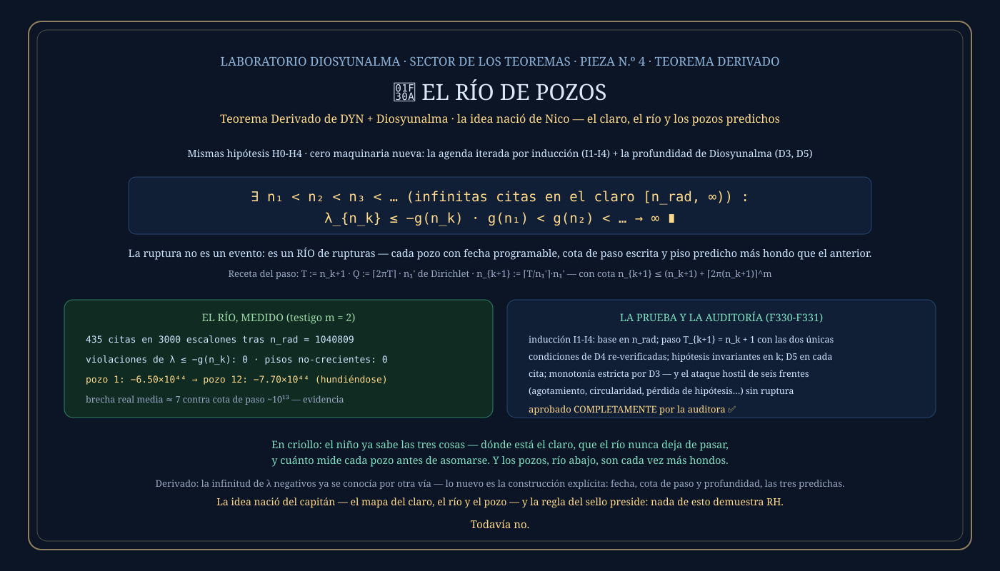

① El cuento del niño — el mapa de los tres teoremas
La historia, del puente de mando
El Claro. El niño entra al bosque y descubre que el aparente
caos tenía un orden escondido. Ese es el Teorema de Astorga.
El Río. Desde ese claro, el niño mira un río. El agua cambia sin parar, pero sigue siendo
el mismo río. Ese es el Teorema de DYN.
El Pozo. Mientras camina, se pregunta si puede saber dónde habrá un pozo antes de llegar.
Observa, calcula y predice. El pozo va a estar allí. Y cuando llega, el pozo está. Ese es el
Teorema de Diosyunalma.
Los tres juntos son un viaje: primero descubrís el orden, luego entendés el movimiento, y desde
ahí te animás a predecir una profundidad que todavía no viste.
Y entonces el capitán disparó la pregunta que le rompió la cabeza a la auditora: «¿puede haber un claro por donde pase el río, y debajo del río un pozo que podamos predecir?» Este teorema derivado es la respuesta — y es SÍ, con las tres cosas a la vez.
② Qué dice, en criollo
Los teoremas anteriores garantizaban UNA ruptura (DYN) con profundidad garantizada (Diosyunalma). Este dice mucho más: la ruptura no es un evento — es un RÍO. En el claro (la ventana desde el umbral radial en adelante) pasan INFINITAS citas, una tras otra, para siempre; debajo de cada una hay un pozo cuya profundidad se predice ANTES de llegar; y los pisos de los pozos solo se hunden, río abajo, sin fondo. Fecha, lugar y profundidad: las tres predichas, para infinitos pozos.
③ El enunciado
Mismas hipótesis H0-H4 de DYN — y cero maquinaria nueva:
λ_{n_k} ≤ −g(n_k) ∀k · g(n₁) < g(n₂) < … → ∞ ∎
④ La demostración, paso a paso
La auditora no aceptó un «iteramos» al pasar: pidió inducción formal. Acá está — el acta completa en docs/teoremas/TEOREMA3-COROLARIO-RIO.md y su auditoría al lado.
La agenda de DYN (el paso D4, ya auditado) con meta T₁ = n_rad produce la primera cita n₁ ≥ n_rad, con su cota de búsqueda escrita. Ese es el primer pozo del río.
Teniendo el pozo n_k, poné la meta un paso más allá: T_{k+1} = n_k + 1. La agenda solo le pide DOS cosas a la meta — que sea un número entero, y que sea ≥ 1 — y las dos se cumplen siempre. Así que la agenda entrega una cita nueva n_{k+1} > n_k, con la misma condición angular de siempre (todas las fases a distancia ≤ 1 del compás). Nada se agota: cada vuelta solo necesita un entero más grande, y enteros más grandes hay para siempre.
Las H0-H4 son de la CONFIGURACIÓN, no del paso: no dependen de k, así que no hay nada que se gaste al iterar. Y las condiciones para medir el pozo (el umbral del coro n ≥ 3, la cita con ε = 1) se cumplen en cada n_k — de hecho mejoran, porque cada cita está más adentro del claro que la anterior.
En cada cita n_k, el golpe más el coro (el paso D5 de Diosyunalma) dan λ ≤ −g(n_k): el piso del pozo, predicho por fórmula. Y como g es estrictamente creciente en el claro (el paso D3, con sus dos integraciones auditadas), n_k < n_{k+1} obliga g(n_k) < g(n_{k+1}): cada pozo se predice más hondo que el anterior. Y como los n_k crecen sin parar y el exponencial manda, g(n_k) → ∞: el río no tiene fondo. ∎
⑤ Qué lo hace real
| qué es | número (testigo m = 2) |
|---|---|
| citas en la ventana de 3000 escalones tras n_rad | 435 |
| violaciones del piso predicho λ ≤ −g(n_k) | 0 |
| pisos que no se hundieron | 0 |
| pozo 1 → pozo 12 (hundiéndose a la vista) | −6.50×10⁴⁴ → −7.70×10⁴⁴ |
| brecha real media entre citas (contra cota de paso ~10¹³) | ≈ 7 |
Reproducible: go run ./cmd/elriodepozos. Evidencia de un testigo — la prueba es la inducción del paso ④, y solo ella.
La auditora pidió base, paso e hipótesis conservadas (nada de «iteramos» al pasar), la precisión de qué significa «programable» (respuesta: receta de tres líneas y cota de paso escrita — no una existencia abstracta), y un ataque hostil: ¿puede detenerse la iteración? (no — nada se agota); ¿hay dependencia circular? (no — la cadena solo mira hacia adelante); ¿se pierde una hipótesis entre k y k+1? (no — son de la configuración); ¿«cita» cambia de significado? (no — ε = 1 idéntico en cada vuelta). Aprobado completamente.
Por pedido expreso de la auditora quedó grabado en las tres copias del registro: la idea conceptual del Río de Pozos es de Nico — el cuento del niño y la pregunta que unió los tres teoremas. El taller hizo la traducción y la formalización. La metáfora no fue decoración: fue una máquina de hacer preguntas, y la primera pregunta que fabricó resultó ser un teorema verdadero a las horas de nacer el tercero.
⑥ La placa
